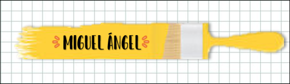
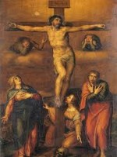

|
 |
|---|---|
 |
 |
Michelangelo Buonarroti fue un hombre solitario, iracundo y soberbio, constantemente desgarrado por sus pasiones y su genio. Dominó las cuatro nobles artes que solicitaron de su talento: la escultura, la pintura, la arquitectura y la poesía, siendo en esto parangonable a otro genio polifacético de su época, Leonardo da Vinci. Durante su larga vida amasó grandes riquezas, pero era sobrio en extremo, incluso avaro, y jamás disfrutó de sus bienes. Si Hipócrates afirmó que el hombre es todo él enfermedad, Miguel Ángel encarnó su máxima fiel y exageradamente, pues no hubo día que no asegurase padecer una u otra dolencia.
En Caprese, hermosa aldea rodeada de prados y encinares, nació el 6 de marzo de 1475 Miguel Ángel, hijo de Ludovico Buonarroti y de Francesa di Neri di Miniato del Sera. Su padre descendía de artesanos y, quizás por ello, siempre se opuso a la vocación de su hijo; consideraba que el comercio era mucho más rentable y distinguido que cualquier actividad manual plebeya. Miguel Ángel siempre estuvo agradecido a su nodriza, mujer de un cincelador, pues aseguraba que con su leche había mamado "el escoplo y el mazo para hacer las estatuas".
En marzo de 1505 el artista fue requerido de nuevo en Roma por el papa Julio II. Se trataba de un pontífice de fuerte personalidad, vigoroso y tenaz, que iba a presidir el gran momento artístico e intelectual de la Roma renacentista, en la que destacarían por encima de todos dos artistas sublimes: Miguel Ángel Buonarroti y Rafael Sanzio de Urbino. Miguel Ángel, despechado, abandonó Roma dispuesto a no regresar nunca más. Sin embargo, en mayo de 1508 aceptó un nuevo cometido del papa, quien deseaba mitigar su disgusto y compensarle de algún modo confiándole la decoración de la Capilla Sixtina. Miguel Ángel aceptó, aunque estaba seguro de que el inspirador del nuevo encargo no podía ser otro que Bramante, su enemigo y competidor, que ansiaba verle fracasar como fresquista para sustituirle por su favorito, Rafael.
La cúpula de la Basílica de San Pedro, una de las piezas más perfectas y más felizmente unitarias jamás concebidas, es junto al proyecto de la Plaza del Campidoglio y al Palacio Farnesio la culminación de las ideas constructivas de Miguel Ángel, que en este aspecto se mostró, si cabe, aún más audaz y novedoso que en el ámbito de la pintura o la escultura. En su arquitectura buscaba ante todo el contraste entre luces y sombras, entre macizos y vacíos, logrando lo que los críticos han denominado "fluctuación del espacio" y anticipándose a las grandes creaciones barrocas que más tarde llevarían a cabo grandes artistas como Bernini o Borromini.
A partir de 1560, el polifacético e hipocondríaco genio comenzó a padecer una serie de dolencias y achaques propios de la ancianidad. Mientras los expertos empezaban a considerarle superior a los clásicos griegos y romanos y sus detractores le acusaban de falta de mesura y naturalidad, Buonarroti se veía obligado a guardar cama y era víctima de frecuentes desvanecimientos. A finales de 1563 se le desencadenó un proceso arteriosclerótico que le mantuvo prácticamente inmóvil hasta su muerte. Poco antes, aún tuvo tiempo de reunir, ayudado por su discípulo Luigi Gaeta, cuantos bocetos, maquetas y cartones había diseminados por su taller, con objeto de quemarlos para que nadie supiese jamás cuáles habían sido los postreros sueños artísticos del genio.
Apenas dos meses después, el 18 de febrero de 1564, se extinguió lentamente. Sus últimas palabras fueron: "Dejo mi alma en manos de Dios, doy mi cuerpo a la tierra y entrego mis bienes a mis parientes más próximos." Cuatro hombres le acompañaron en esos instantes: Daniello da Volterra, Tomaso dei Cavalieri y Luigi Gaeta, sus más fieles ayudantes, y su criado Antonio, que fue el único capaz de cerrar sus párpados cuando expiró. Con él moría toda una época y concluía ese portentoso momento histórico que conocemos como Renacimiento italiano.

Miguel Ángel – El juicio final (1508-1512) |
|
 |
Miguel Ángel - La creación de Adán (1512) |
|  | Miguel Ángel - La Crucifixión (1540) |
Miguel Ángel - La conversión de San Pablo (1549) |
|
Miguel Ángel - Crucifixión de San Pedro (1546-1550) |